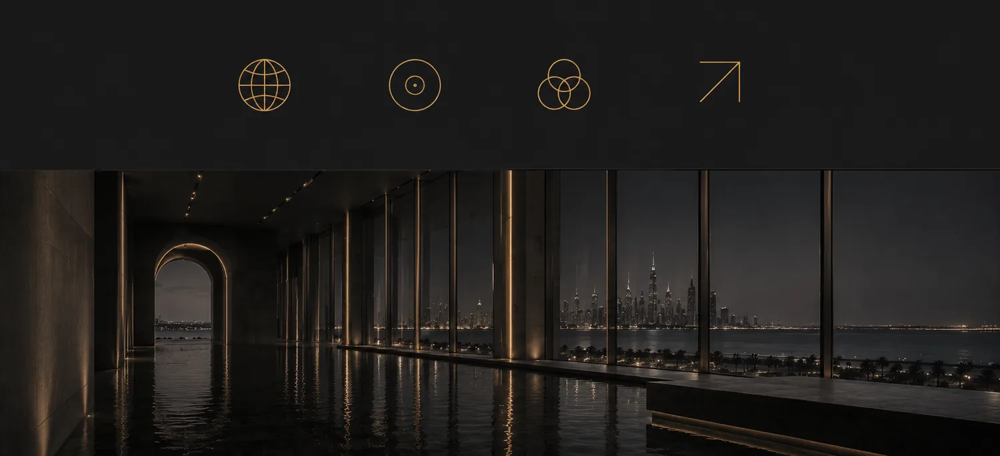
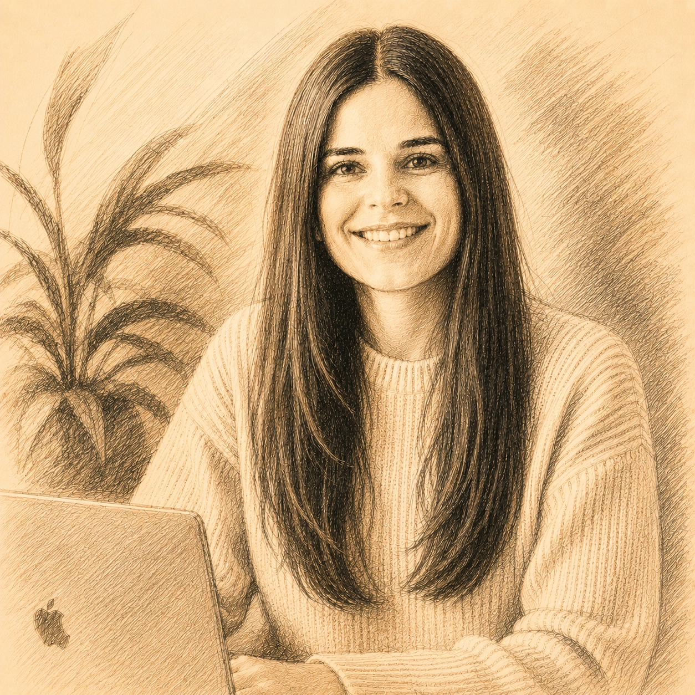
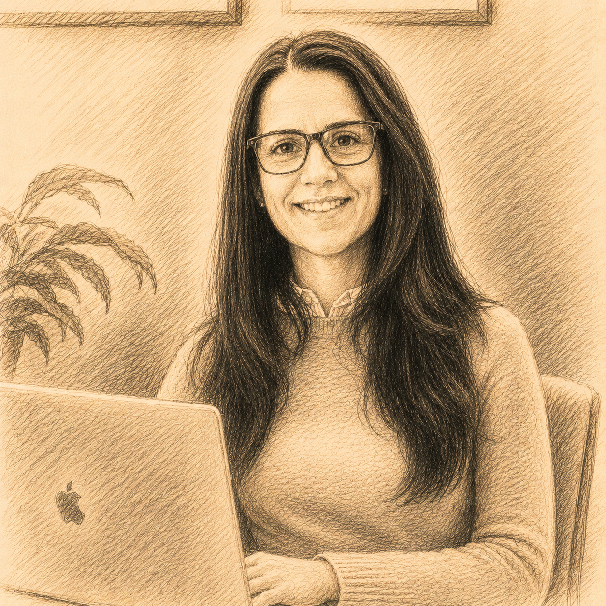
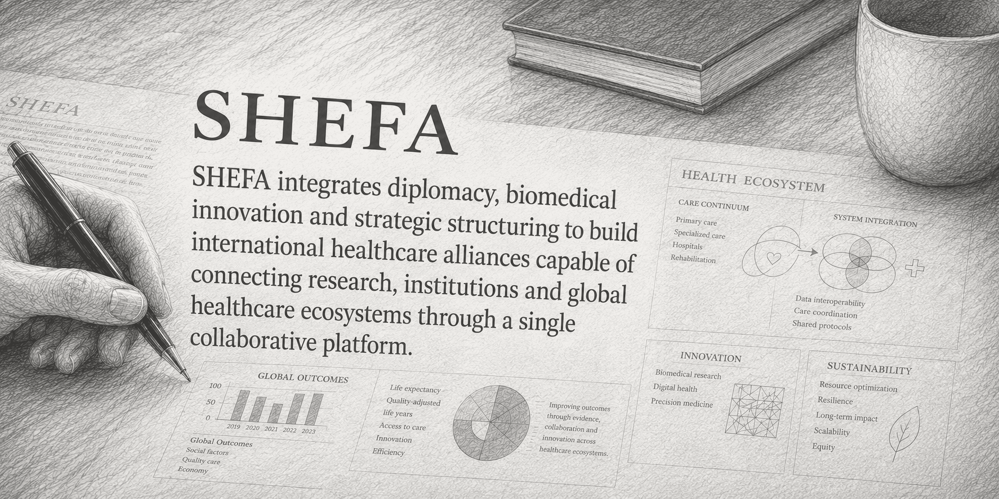

01
Biomedical Innovation
Strategic positioning, validation and international projection of biomedical, regenerative and translational innovation with institutional implementation potential.
A strategic platform at the intersection of scientific diplomacy, healthcare ecosystems and international strategic partnerships.
SHEFA connects biomedical innovation, institutional ecosystems and international healthcare partnerships through strategic intelligence, scientific diplomacy and institutional execution.
Built through European expertise and Gulf institutional connectivity, SHEFA creates pathways between innovation, implementation and long-term institutional impact.
Strategic positioning, validation and international projection of biomedical, regenerative and translational innovation with institutional implementation potential.
Connecting institutions, healthcare ecosystems and strategic stakeholders across Europe, Gulf and Middle East environments.
Structuring high-value collaborations across research, healthcare, innovation and institutional ecosystems.
Facilitating strategic access to Gulf and international healthcare ecosystems through trusted institutional networks.
Enabling the transition from biomedical innovation to real-world clinical implementation through strategic pilots, institutional validation and healthcare deployment pathways.
SHEFA contributes to the development of next-generation healthcare ecosystems through multidisciplinary platforms integrating biomedical innovation, surgical intelligence, procedural simulation and translational healthcare infrastructure.
Transforming perioperative environments into connected institutional intelligence systems through procedural synchronization, operational visibility and real-time clinical orchestration.
Developing institutional ecosystems for hyper-realistic surgical simulation focused on the advanced modelling of complex clinical processes, procedural preparation and the generation of immersive surgical experience.
Connecting regenerative biology, translational medicine and longevity-focused biomedical innovation into future healthcare ecosystems across Gulf and international institutional environments.

Trusted relationships across healthcare, innovation and international ecosystems.
Ability to translate complexity into structured opportunities and strategic initiatives.
Operational understanding of Gulf and international institutional environments.
Beyond strategy — activation, alignment and implementation.

International healthcare diplomacy, institutional partnerships and Gulf ecosystem development.

Strategic structuring, innovation ecosystems and activation of complex international initiatives.

SHEFA operates through a highly selective collaboration model, prioritising strategic alignment, institutional value and long-term impact.
We engage in projects where international connectivity, trusted relationships and execution create long-term institutional value.
Strategic healthcare ecosystems require more than innovation alone.
Trusted relationships shape healthcare transformation.
Access, alignment and execution define the future of international healthcare collaboration.
Barcelona, Spain